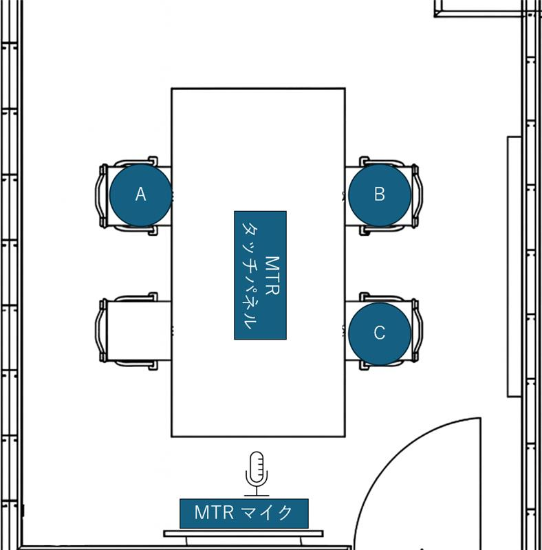
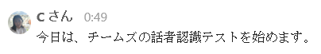
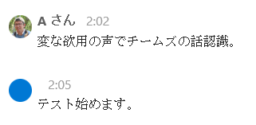
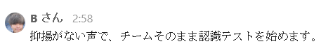
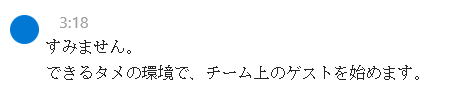
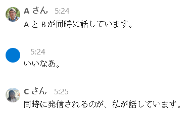

- はじめに
- Intelligent Speaker とは？
- 検証する環境
- 検証してみた
1. 自然な抑揚のパターン
2. 抑揚を不自然にしたパターン
3. 抑揚を抑えたパターン
4. ノイズがある状態で話すパターン
5. 話者を変更しながら連続して話すパターン
6. 同時に発話 (オーバーラップ) するパターン - まとめ
- 補足
はじめに
こんにちは、Unified Communications サポート チームです。
いつも Microsoft Teams をご利用いただきありがとうございます。
近年、多くのお客様に会議などで音声認識 / 話者認識 (Intelligent Speaker) をご活用いただいております。
Intelligent Speaker で利用する AI は入力する音声や環境などによって、結果がある程度変動します。
このこと自体はサービスとして正常な動作の範囲内の挙動ですが、「じゃあ実際にどういう音声が認識されうるのか？またはされにくいのか？」という点が気になる方も多いかと思います。
そこで本記事では、実際の会議室環境で Intelligent Speaker の精度や話者識別性能を検証し、どのような条件で精度が変わるのかを評価してまとめてみました。
Intelligent Speaker を利用する上でのご参考となりましたら幸いです。
なお、検証の際に利用された Microsoft Teams Rooms デバイス (MTR) の具体的な製品名やメーカー名は本記事で公開しておりませんので、予めご了承ください。
※ 本記事の内容は執筆時点 (2025 年 12 月) の情報・動作に基づくものとなります。
Intelligent Speaker とは？
Microsoft Teams では、会議室等の会話において AI が「誰が話しているか」を認識し、字幕やトランスクリプトに話者名を表示する、「Intelligent Speaker」 という機能があります。
日本語では「音声認識」や「話者認識」と呼称することもあります。
当該機能を使うことで会議の記録を後から見返したときに「誰が何を言ったか」が分かりやすくなるメリットがあります。

※会議中の文字起こしで Intelligent Speaker が動作している様子(赤枠)
Intelligent Speaker を利用するための前提条件などは以下の公開情報やブログ記事をご参照ください。
Teams Roomsでの音声認識 (音声プロファイル) のテナント管理コントロール - Microsoft Teams | Microsoft Learn
Teams RoomsでPeople認識を有効にする - Microsoft Teams | Microsoft Learn
Microsoft Teamsインテリジェント スピーカーを使用して会議の文字起こしで室内の参加者を識別する - Microsoft サポート
Teams - Teams 会議での Intelligent Speaker (音声認識) について | Japan Unified Communications Support Blog
検証する環境
今回の検証は 4 ～ 5 名が入れる会議室環境を想定し、複数話者・異なる声質・性別を含む実運用に近い条件で評価を行いました。
音声プロファイルを登録して検証に臨むユーザーは以下の 3 名です。
※再生ボタンから各ユーザーが Microsoft Teams に登録している音声プロファイルを再生することが出来ます。
30 代、男性 (A さん)
 20 代、男性 (B さん)
20 代、男性 (B さん)
 20 代、女性 (C さん)
20 代、女性 (C さん)
以下のような一般的な会議室で検証を行います。
人と MTR デバイス群をそれぞれ以下のように配置します。MTR マイクの指向性は机の方面です。

検証してみた
それではそれぞれ実際に検証してみましょう！検証シナリオは大きく分けて以下の 6 パターン、用意しました。
- 自然な抑揚のパターン
- 抑揚を不自然にしたパターン
- 抑揚を抑えたパターン
- ノイズがある状態で話すパターン
- 話者を変更しながら連続して話すパターン
- 同時に発話 (オーバーラップ) するパターン
各パターンで出力されたトランスクリプション (文字起こし)、MTR マイクが音声を拾ったレコーディングを中心に検証結果を記載します。
※太文字が実際に発した言葉です。
※話者のプライバシー保護の観点よりトランスクリプションでアカウントの表示名が表示される箇所を、A さん、B さん、C さんにそれぞれ置換しています。
1. 自然な抑揚のパターン
最初のテストですので、話者として認識されるかどうかという確認も含めて「今日は Teams の話者認識テストを始めます。」というセリフを全員に読んでもらいます。
まずは A さん:

A さんを話者として認識してくれました。
“日” の読み (ひ、び、にち等) は声に出していないので、”今日” という言葉自体は認識しているのではないかと推測できますが、”今” だけがなぜか抜けてしまいましたね。
また、”話者” が “馬車” になっていますが、”は” と “ば” で母音は a で共通しているため、概ね聞き取れているといってよいのではないでしょうか。
次は B さん:

こちらも B さんを話者と認識しています。
“今日は、” のセリフを読んでいましたがそちらは文字起こしされず、”あとは、” と本来発していない声が文字起こしされました。
あとは、B さんのテストだけ “チームズ” ではなく、”Teams” と文字起こしされているのも印象的です。
最後に C さん:

C さんも話者として認識してくれていますね。
このテストの中では A さん、B さんと比較すると、”チームズ” と認識されていますが最も想定通りに文字起こしが出来ています。
以上のテストより、話者を認識するための環境は整っていることが確認できました。
2. 抑揚を不自然にしたパターン
次に、「変な抑揚の声で Teams の話者認識テストをはーじーめーまーす！」（語尾を強調、抑揚を不自然にする）と言うパターンと、「変な抑揚の声で Teams の話者認識テストをはじめます。」（声の高さを上げ下げさせながら話す）の、2 つのパターンで試します。
今回のパターンは A さんだけに実施してもらいます。
2-1. 語尾を強調、抑揚を不自然にするパターン

“欲用” と “抑揚” の誤変換がありますが、発声はあっていますね。
“話者認識” の “者” が抜けていることも気になりますが、注目すべきはその後の “テスト” 以降に発せられた声の話者を急に認識しなくなった点です。
前後の単語の抑揚もくみ取った結果、A さんを話者として認識・評価しなくなったのかもしれません。
2-2. 声の高さを上げ下げさせながら話すパターン
高い声から低い声まで連続的に声の高さが変化し、抑揚をつけています。
“チームズの” が “チームズが” となっているものの、概ね聞き取れていますね。
声の高低ではなく、明瞭さが評価されていた可能性があります。
3. 抑揚を抑えたパターン
今度はパターン 2 とは逆に「抑揚がない声で Teams の話者認識テストをはじめます。」と、抑揚を抑えたパターンで試します。
今回のパターンは B さんが実施します。

“Teams の” の後半が “その” に変化しました。
そしてこの “その” に続けて発声していると判断されたのか、”話者” が “まま” に変化し、”そのまま” という単語として出力されています。
棒読みの発声ではありますが、概ね聞き取れているのではないかと思われます。
4. ノイズがある状態で話すパターン
雑音 (会社での作業音など) を流して疑似的にノイズがある状態を作り出し、「ノイズがある環境で Teams の話者認識テストをはじめます」の聞き取りが成功するか否かを確認します。
なお、Teams にはノイズを検知し、排除するノイズ キャンセリングの機能が既定で有効となっています (参考: Microsoft Teams会議のバックグラウンド ノイズを軽減する - Microsoft サポート)。
ノイズが活発な状態でノイズ キャンセリングを無効とした場合において話者の音声が拾いづらくなることは自明なため、ノイズ キャンセリングが有効となっている状態で「ノイズがある環境で Teams の話者認識テストをはじめます」を聞き取り、認識するか確認します。
C さんが今回のパターンを検証します。

有効となっているノイズ キャンセリングのためか、レコーディング データ上はかろうじて言葉を聞き取れるレベルの録音となっていました。
そしてこの録音レベルに沿うような形で話者も認識出来ず、なぜか “すみません。” と謝罪から入るほぼ想定外の文字起こしとなってしまっています。
5. 話者を変更しながら連続して話すパターン
以下のように立て続けに話者を変更しながら発声し、認識するかどうかを確認します。
A：「私の次は B が話します」
B：「そして私の次は C が話します」
C：「そして最後に私が話して終わりです」
A さんから C さんまで全員登場するパターンとなります。

完璧ですね！B や C もちゃんとアルファベットとして認識して文字起こしをしてくれているのも Good です。
6. 同時に発話 (オーバーラップ) するパターン
最後に、話者が同時に発話した時にどのように認識されるかを試します。
以下のように A さんと B さんが同時に発声し、C さんもそれにかぶせるように発声したときにどうなるかの確認です。
A と B（同時）：「A と B が同時に話しています」
C：「そして最後に私が話します」
こちらもパターン 5 同様、全員登場するパターンです。

最初のセリフ自体の認識は完璧ですが、A さんと B さんが同時に発声しているにもかかわらず、A さんのみが発声していることになってしまいました。
また、”いいなあ” と誰も発声していないのですが、なぜか認識されています。
C さんのセリフについては、C さんを話者として認識してくれていますね。
最後にひとりで発声している時のセリフ (～～私が話しています) は正しく文字起こしされているものの、やはり声が重なっている部分の文字起こしは少々不正確です。
まとめ
以上の検証の結果を表にまとめました。
| パターン | 30代、男性 (Aさん) | 20代、男性 (Bさん) | 20代、女性 (Cさん) |
|---|---|---|---|
| 1. 自然な抑揚のパターン | 〇 | 〇 | ◎ |
| 2. 抑揚を不自然にしたパターン | △ | – | – |
| 3. 抑揚を抑えたパターン | – | ○ | – |
| 4. ノイズがある状態で話すパターン | – | – | × |
| 5. 話者を変更しながら連続して話すパターン | ◎ | ◎ | ◎ |
| 6. 同時に発話 (オーバーラップ) するパターン | ◎ | × | △ |
【評価】
◎ … ほぼ完璧に認識されている
○ … 一部不明瞭ながらも概ね認識されている
△ … 不明瞭な部分が多く概ね認識されていない
× … 不明瞭であり認識されていない
– … 未実施
いかがだったでしょうか？
本検証では、Teams の Intelligent Speaker がどのような条件で話者を正しく認識し、どのような場面で誤認識が起こりやすいかを多角的に確認しました。
結果、今回の検証では自然な話し方や話者が明確に分かれている状況では高い精度を示す一方、複数人が同時に話す場面やノイズが強い環境では認識が難しくなる傾向が見られました。
皆さまがより快適で効率的な Teams 活用を進めていくうえで、本記事が少しでもお役に立てば幸いです。

補足
冒頭の通り、Intelligent Speaker で利用する AI は入力する音声や環境などによって、結果がある程度変動します。
弊社では日々この AI の精度向上に努めておりますが、状況によっては期待通りに文字起こしがなされなかったり、話者を認識しづらかったりする場合があります。
そんなときは、トランスクリプト内の “このトランスクリプトは役に立ちますか?” のサムズ アップ / サムズ ダウンのボタン (下図参照) より弊社までフィードバック (日本語可) をお寄せください！
こちらのフィードバックは弊社開発部門が直接確認し、製品品質の向上の参考としております。
AI の特性上、フィードバックを多くお寄せいただければいただけるほど、精度向上が期待できるものとなりますので是非忌憚なきご意見を頂戴できればと思います。

※トランスクリプト内の “このトランスクリプトは役立ちますか?” の箇所 (赤枠)
トップへ戻る
(文責: 粂田)
NOTE :
- 2026年01月09日に、初版を公開しました。
※本情報の内容（添付文書、リンク先などを含む）は、作成日時点でのものであり、予告なく変更される場合があります。